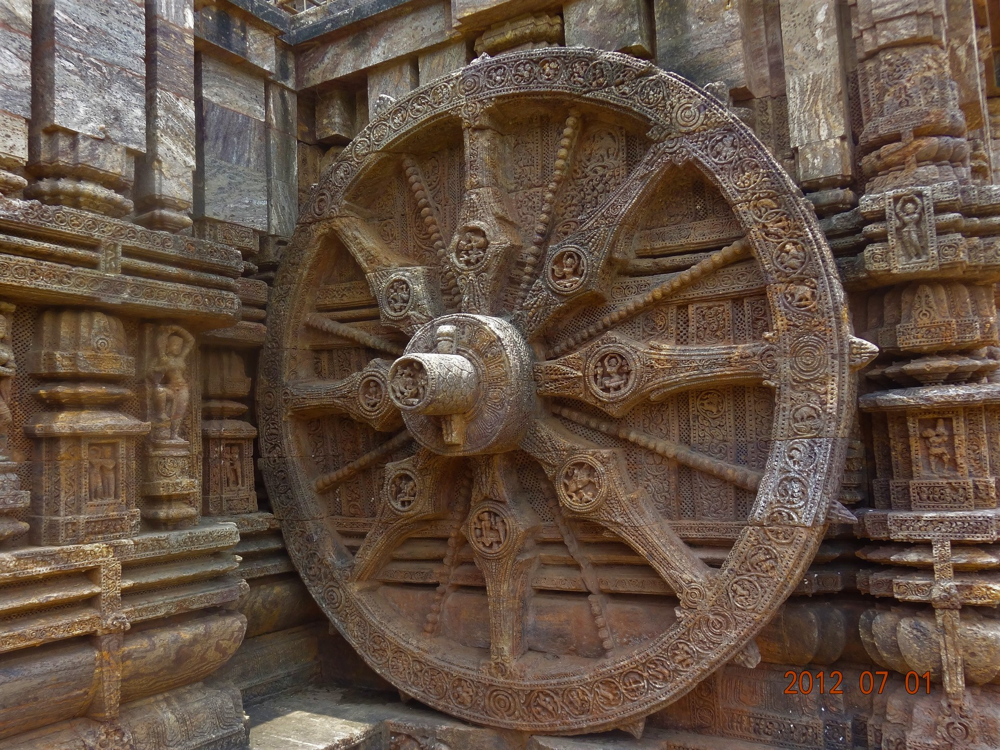
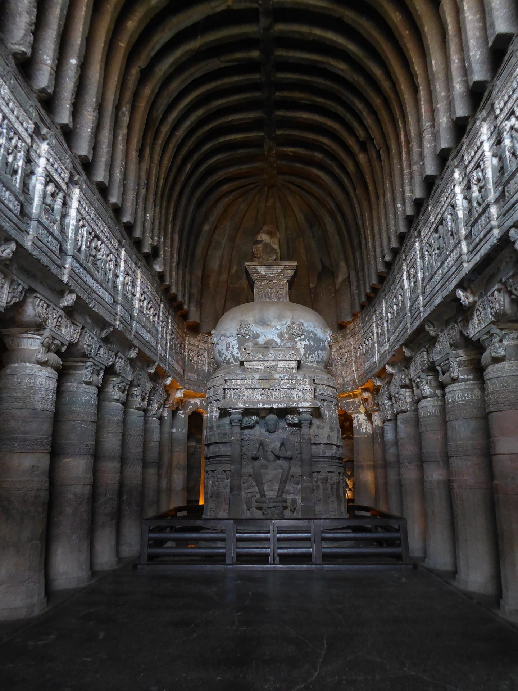
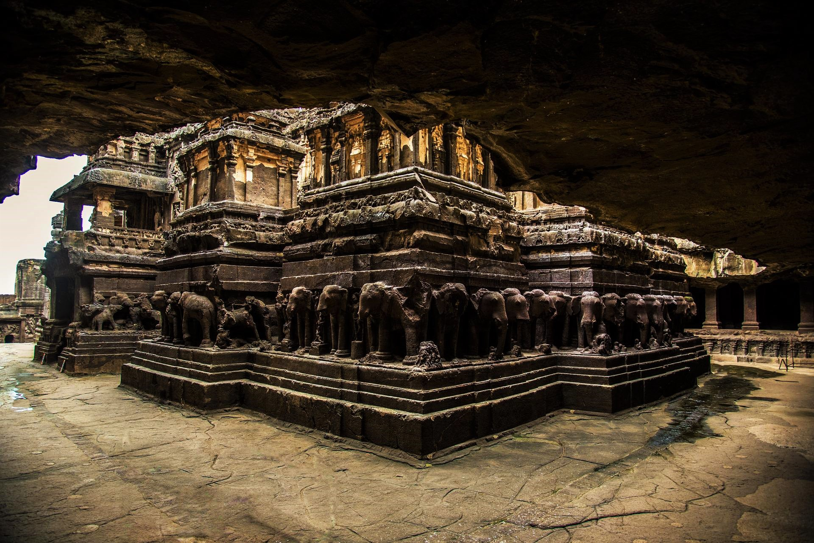
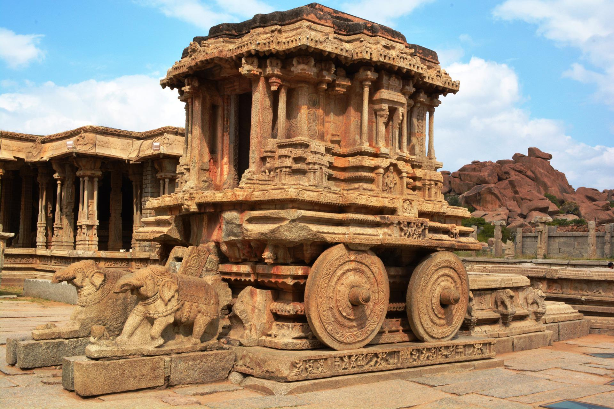
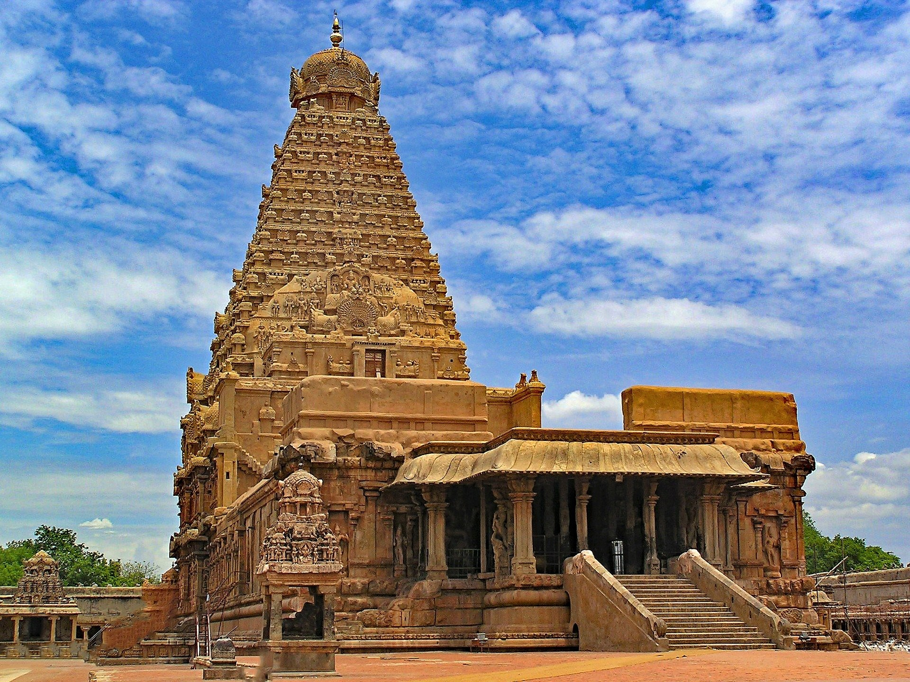
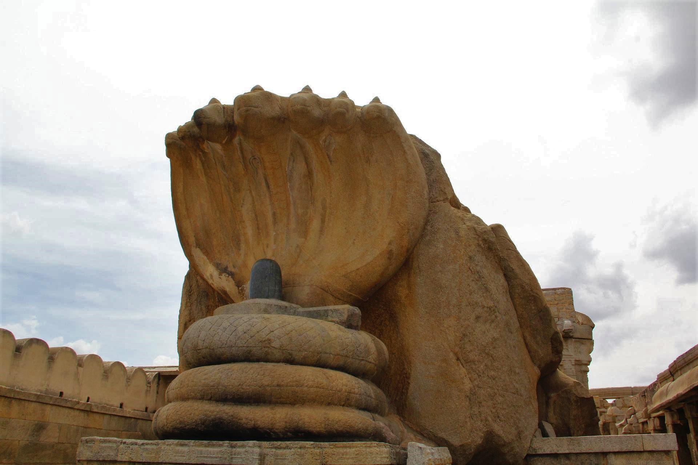
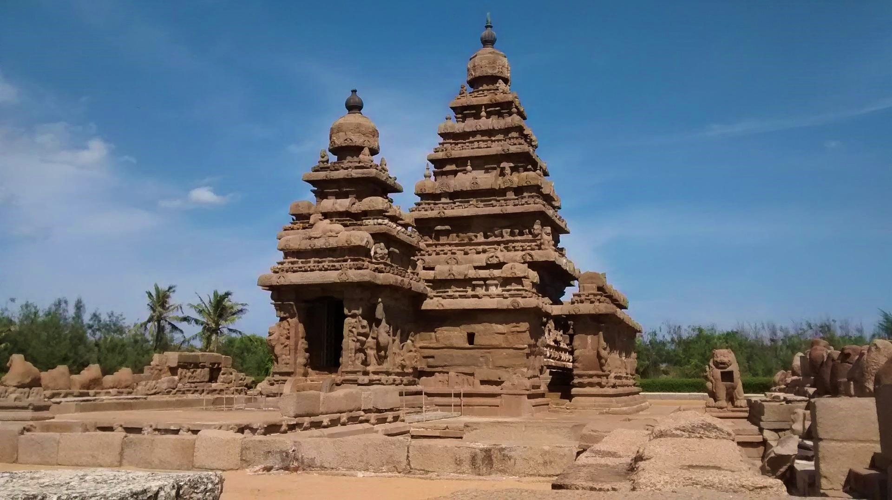
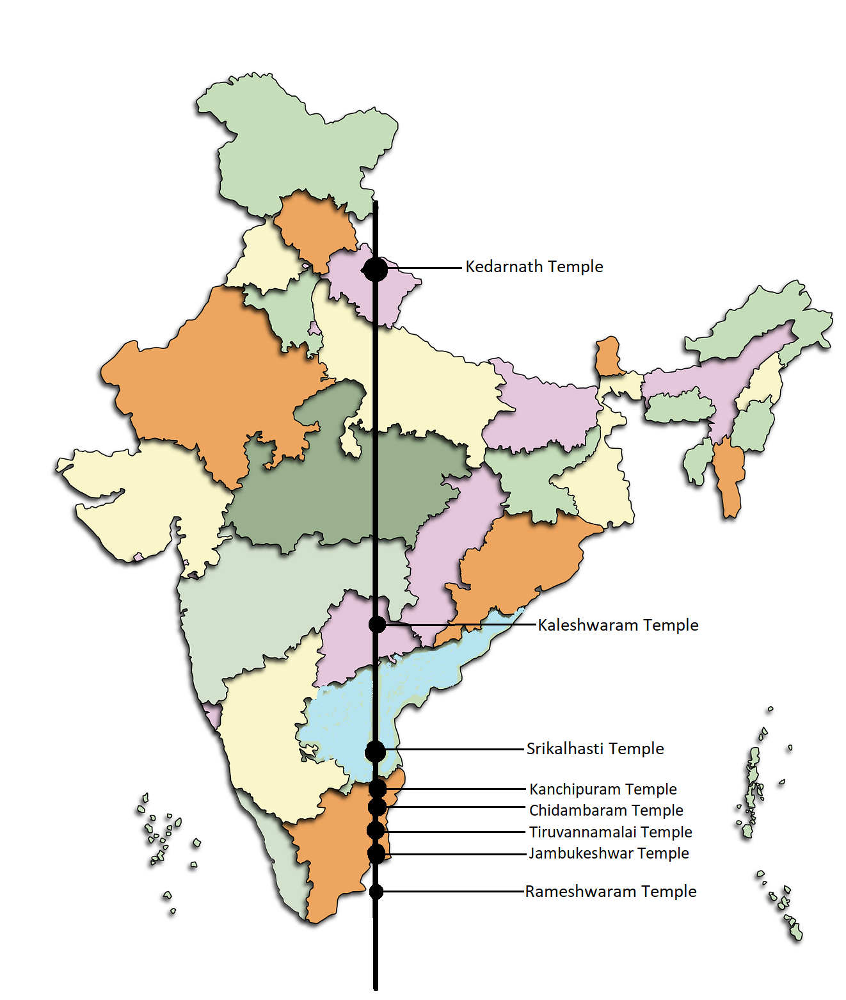

India is the country of different types of traditions , religions , art , literature , culture , architecture and various rituals. Which are exist from many centuries. Our each heritage contain different form of storties , mysteries , facts and many more tales , we are not able to solve and explore all of them , but we can get some information about our scriptures and culture , so these are the some popular facts and information which summarize a different form of our Bharat.
1. The Konark Sun Temple

Konark sun temple is a 13th centuary hindu temple , situated in a town named konark which is 35 km away from Puri district,Odisha.
the structure of this temple is just like a chariot of god surya with 7 divine horses and 12 wheels , these 7 horses are just like the 7 attractive colours which generate from sun , with this the 12 wheels show 12 months of an year and also tells us about the correct time with the help of sunlight and these time is exact in hours , minutes , and seconds and also tells us about the 8 pahar of a day.
One more thing about this temple is that , at the time of sunrise , the first ray of sun is falls in the sanctum of the temple then the scene is worth seeing.
the main gate of this temple is close upto 118 years.
the another fact about the sun temple is that , these temple is not worshipped.
the sun temple is also depicted on the reverse side of the indian currency (note of 10 rupees) to signifies it's importance in indian culture as one of the part of indian heritages.
2. The Ajanta-Ellora Caves

Ajanta-Ellora Caves are UNESCO indian heritages which are situated in aurangabad district,Maharastra.
Ajanta-Ellora Caves are one of the rock-cut cave complexes in the world.
ajanta caves are approx. 30 rock-cut cave monuments which is divide in two phase one is worship and another one is buddhism which is discover for meditation.
ajanta caves is one of the biggest masterpiece in our heritages ,where various buddhism sculptures nd statues re exist which summarize the buddhism religion and art.
ellora is one of the largest rock-cut hindu temple cave where approx. 100 caves at the site , in which 34 caves are open publically , where we can see 3 different religion in one place 12 caves shows buddhishm , 17 caves shows hindu and 5 caves shows jain religion and sculptures.
the paintings of these caves also summarize the information about hindu epics.
each cave show different tradition , religion , and our culture or different avatars of lord shiv and lord vishnu.
both of these two caves consists many types of facts and unsolved questions.
3.The Kailasa Temple

Kailasa Temple is 16 no. cave monument of ellora caves.
the Kailasa Temple is biggest rock-cut temple which built from only one rock , the archeologists believe it is made from single rock.
The construction of this temple create many unsolved questions for engineers because it is a remarkable cave temple in the world because of it's size.
the walls and pillars of this temple are carved with sculptures of various hindu god and goddess , the temple is constructed with flood basalt rocks , in which the carving and obtain a design is very difficult , and whole temple is carved.
the monument is represents a historical environment , which has it's own craftmanship and unique architectue and sculptures.
the construction of this monument was become a question for archeologists , because the monument is very ancient and it is difficult to explain it's correct time of construction.
4. The Vijaya-Vitthal Temple

The Vijaya-Vitthal Temple is situated in town named hampi of vijaynagar district , karnataka.
Hampi - Vijaynagar was the 2nd largest medival-era city in the world , after Beijing.
Hampi temple is fully covered by different types of exceptional architecture , unmatched craftmanship , and unique pillars.
In this temple the group of pillars are connect in each side of monument , these group of pillars represent the tone of vibrations like musical instruments , different pillars represent different harmonically sound like our hindu tradition music , when we play this musical pillars then we can hear 7 musical notes(Sa,Re,Ga,Ma,Pa,Dha,Ni).
A beautiful chariot of lord Vishnu with sculptures of horses where presently elephants are seated , is also placed in a temple , visitors can actually spot the hide legs and tails of the horses behind the elephants.
5 images shown in one sculpture , this type of architecture is also found in here.
The Vijaya-Vitthal Templeis also depicted on the reverse side of the indian currency (note of 50 rupees) to signifies it's importance in indian culture as one of the part of indian heritages.
Hampi temple consists a unique structure.
5. The Brihadeshwara Temple

Brihadeshwara Temple consists so many facts.
Brihadeshwara temple is one of the oldest monument in indian masterpiece ,this temple contain 13 floors without any foundation , even then this is stable from 1000 years.
these temple is 216 feet high in which 1,30,000 tones of granite is used for this construction ,in which the art is raised on granite's stone by carving, whereas carving is very difficult on granite's stone.
On the top of these temple a Golden Kalash is kept , whose weight is approximtely 80 tones which is impossible to kept on the top of temple at ancient time.
these temple is constructed only with the help of granite's stones , not an particular type of gum , paste nd other connective materials is used during this construction . These temple is constructed from interlock technique to join or lock the stones.
another important point is that , at the time of afternoon the shadow of this monument is not shows on the land , this structure of this monument is constructed from this type where the shadow is hide.
it's architecture and craft is designed in a very uniquely way.
6. The Veer-Bhadra Temple

The Veer-Bhadra Temple is 16th century monument situated in Lepakshi , Andhra Pradesh.
these temple is dedicated to one of the famous avtar of lord shiv veerbhadra.
this monument is completely covered with various architectue features , carving and paintings , it's wall is shows many unique paintings of painters , classical-dancers , hindu god and goddess , and many more , the paintings of this temple are also represent our hindu epics Ramayan and Mahabharat.
The fresco in the ceiling of antechamber is said to be largest wall painting of asia , and also a beautiful and largest(23 by 13 feet) wall-painting of 14 avtars of lord shiv.
the most important fact of this temple is it's 72 pillars which are very ancient fom centuries.
1 pillar among 72 pillars of these temple is not grounded to floor , we can say that "the hanging pillar", yet the monument is stable from many centuries.
7. The Shore Temple

The Shore Temple(c.725 AD)is situated in Mahabalipuram district of Tamil Nadu.
this mounument is a complex of temples and shrines that overlooks the shore of Bay of Bengal.
this is a structural monument built with blocks of granite , Even though the architectural creation of this monument sculpturing cut-in and cut-out structures which are continued during subsequent periods.
this temple is one of the most popular temples in mahabalipuram , excavations in early 2000s have revealed new structures here under the sand.
the monument is the combination of 3 shrines , the main shrine is dedicated to lord shiv , outer wall of shrine to vishnu and inner side of boundary wall are sculptured and topped by large sculptures of Nandi.
with this , the two shikhars of monument have a pyramidal outline , each individual tier is distinct with the overhanging eaves that cast and shows dark shadows.
the shore temple is a 8th century monument situated on ocean's site , many natural disasters had been come to near it , but they can't harm this temple.
8. 8-Temples on a same longitude

Indian heritages contain so many monuments , but mostly south india is the corner of indian traditions and culture.
then this information is based on those 8 temples which create a different and new thoughts about the india's technology.
Kedarnath Temple
Kaleshwaram Temple
Srikalhasti Temple
Kanchipuram Temple
Chidambaram Temple
Tiruvannamalai Temple
Jambukeshwar Temple
Rameshwaram Temple
All of these 8 temples are constructed from so many years , and these all are built at same period of time , these all are situated in different states of our
country , and also very far in distances , with this , these temples are situated on a same longitude or lie more or less on the same geographic longitude of 79° E 41'54” , whereas many years ago there
is not any types of satellites and google maps are available , even then these 8 temples are a unique structure of indian architecture.
one more thing , these all temples are of lord shiv temples which are in a straight line.
all these temples represents 5 elements of nature , also called Pancha-tatwa, which has very great importance in hindu religion and they are "Water , Fire , Space , Air and Earth".
Note - All the facts which are mentioned above are based on the famous mythological stories and information available on social sites , these are the some small information which represents our mythological
facts , this facts does not claim complete truthfullness.